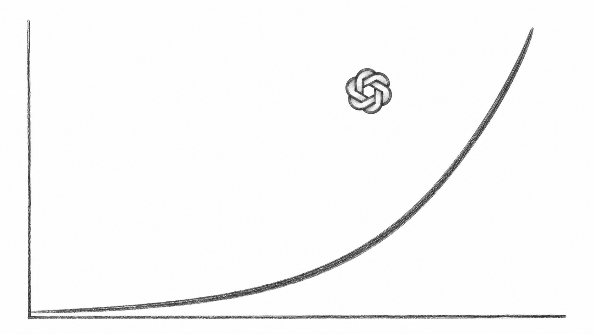

每日简报 · 第 0 期（样刊）
2026 年 11 月 5 日简报
2026 年 11 月 5 日 星期四 · 3 条新闻 + 1 篇延伸阅读 · 整理：非常AI
本期 3 条新闻 + 1 篇延伸阅读：一个自报的搜索量数字、一项改权重的研究、一个选片新功能，外加一篇谈注意力的长信。
第 0 期样刊，了解说明
本期为站点上线前的第 0 期样刊，素材取自乔木公开阅读目录 2026-11-04 列表，摘要均为本站自有文字、未搬运原文。本版已逐条核对原文：每条都给出原文直达链接、发布日期、来源性质与核验状态；乔木目录仅作为「发现渠道」标注，不再冒充原文。核验口径：原文已核 / 未独立核实 / 尚未确认 / 存在争议，标题力度与核验状态一致。
本期目录 · 3 条 + 延伸阅读
01
OpenAI 称：ChatGPT 的搜索类查询量，已约为谷歌的五分之一
OpenAI 消费产品负责人 Adam Fry 接受 Big Technology 访谈时称，ChatGPT 的「搜索类查询」量已达谷歌约 20%，过去两个月周活从 10 亿涨到 12 亿。

配图：Big Technology 原文插图（2026-11-03），示意 ChatGPT 增长曲线。
先说清口径：按 Fry 的定义，搜索类查询指需要最新信息、过去会去搜索引擎完成的问题，如查人物地点、金融健康信息。这个比例由 OpenAI 自行定义、自行统计；记者追问多轮对话如何计数，本次可读取的公开部分未显示回答，计数方式尚未核实，报道也未提供可供外界复算的完整比较方法。
这提供了观察 ChatGPT 搜索使用规模的一条企业自述，但不足以判断它替代了多少传统搜索，也不能据此计算搜索市场份额。
02
大模型亲手改了小模型的权重，修好了一个让它反复打转的毛病
MIT CSAIL 四位研究者让前沿模型 GPT-6 Astra 不训练、不算梯度，直接改小模型 Qwen3.5-0.8B 的权重，看能否让它数学变好。Astra 查出的不是知识不够，而是一个具体故障：这模型思考时容易原地打转、反复重复同一段推理，许多回答因耗尽输出额度而未能完成。它定位到相关参数，只改约 0.016%，打转大幅减少：同一测试口径下，MATH-500 从 7.9% 升到 48.1%，指令跟随 IFEval 从 21.0% 升到 62.3%。修改后的模型已公开，可下载试用，并有在线演示和独立复测。
边界由作者自己划明：这修的是「已有能力被故障挡住」，不是增加能力；换一个没有打转毛病的 Gemma 3 270M，未观察到明确改善。还要提醒：独立审计按小模型官方推荐设置复测，未修改的原模型本可得约 44%（测试口径见本站核验记录），所以 7.9% 这个起点很大程度是「打转有多严重」的度量，不能读成数学能力涨了六倍。作为新的模型调试思路值得跟踪；作为通用方法是否实用，仍待更多模型与故障类型验证。
03
Netflix 推出 AI Discover：先选一个心情主题，再慢慢缩小范围
Netflix 在电视应用里推出 AI Discover 新区域，入口是顶部导航新加的 Discover 标签，官方 2026 年 11 月 3 日发文宣布。用起来分三步：先挑一个主题，如「Scare Me」「Quick Watches」，每个主题配一段影片预览；选中后给出一批匹配推荐，想再细就继续点更具体的主题，或换一组新的；每部片旁有「Tune Your Recommendations」按钮，可保留推荐，也可明确说不要再推。
图片来源：Netflix 官方演示素材（静态帧）。
值得关注的是反馈方式：你说某部不合口味，它会在 Discover 里记住、不再反复出现，官方称系统会按反馈实时调整。而这目前只是试验——官方称之为「试验场」，哪些功能留下或进入主界面，看反馈再定。
范围与限制：先在美国、面向英文版会员、在受支持的电视上向一小部分人开放，未来几周逐步扩大；主题由 AI 参与生成，方法未披露；官方描述是点选主题，未提自由输入文字找片；全面上线与美国以外时间表均未给出。
延伸阅读
Dan Koe：2027 年最赚钱的 AI 生意，是先让人看见你
Dan Koe 在长信中认为：AI 让做产品越来越容易之后，回报最高的技能是获取注意力——没人知道你是谁、你能提供什么，就没人付钱。此为作者观点，文中同时推广他自己的产品 Eden，作延伸阅读，不计入本期新闻。
本期完。往期见
存档页。本期为第 0 期样刊，完整核验记录由编辑部留存，条内来源与核验状态以上述标注为准。